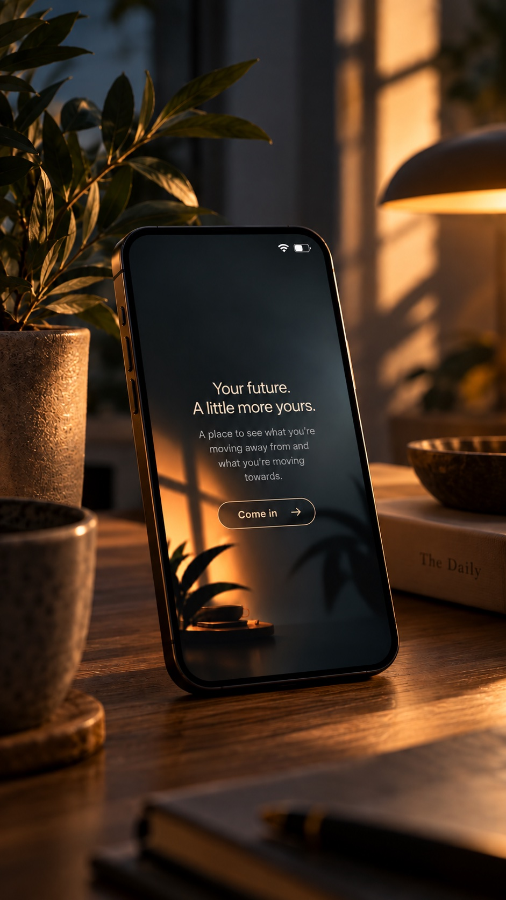
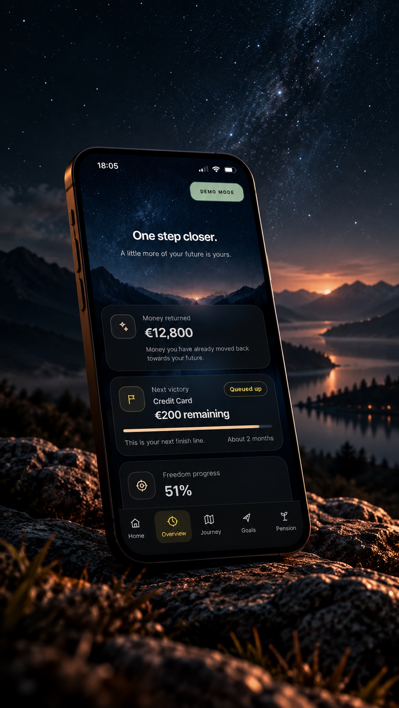
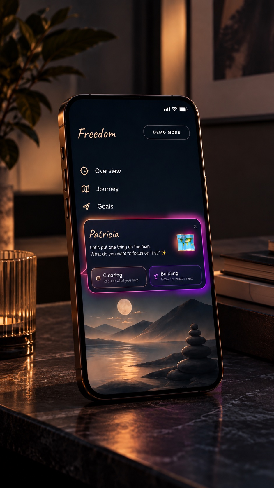
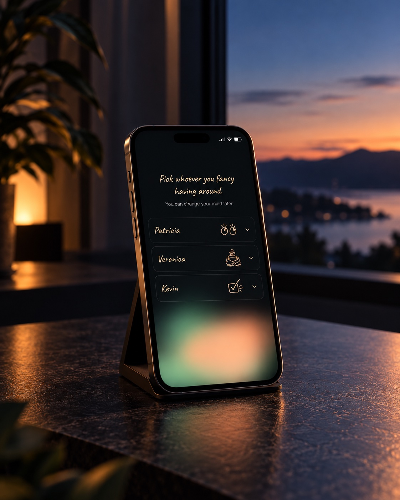
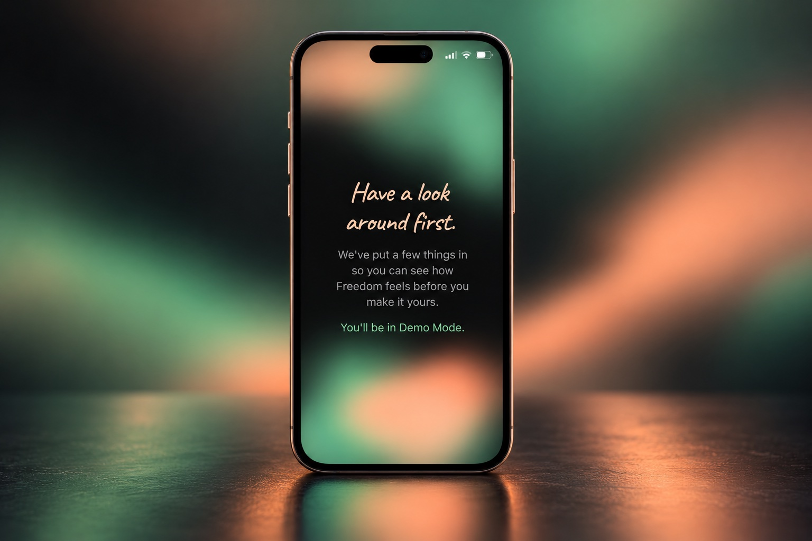
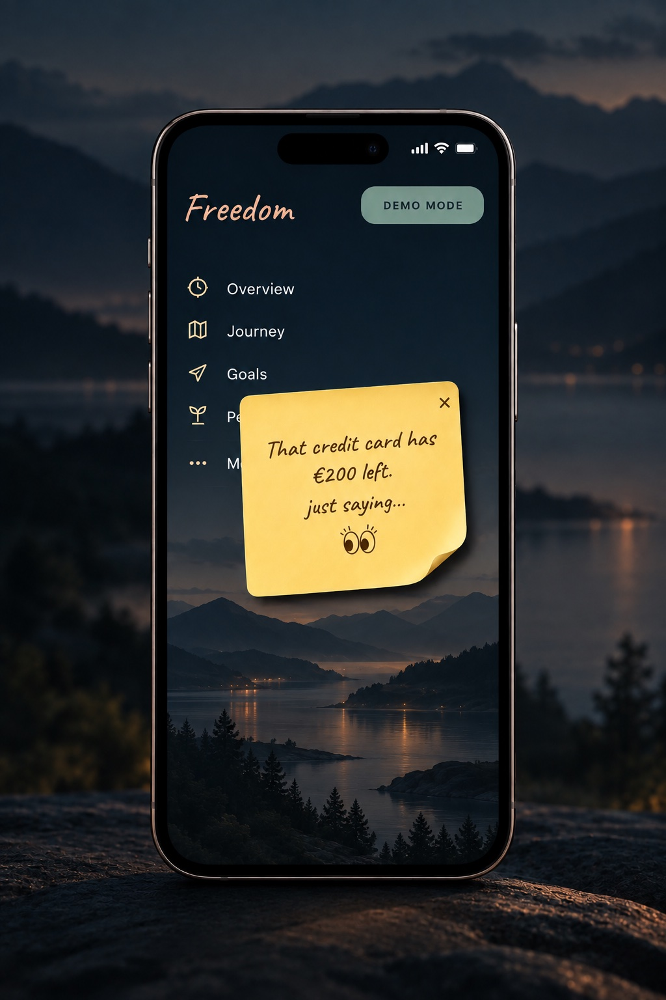
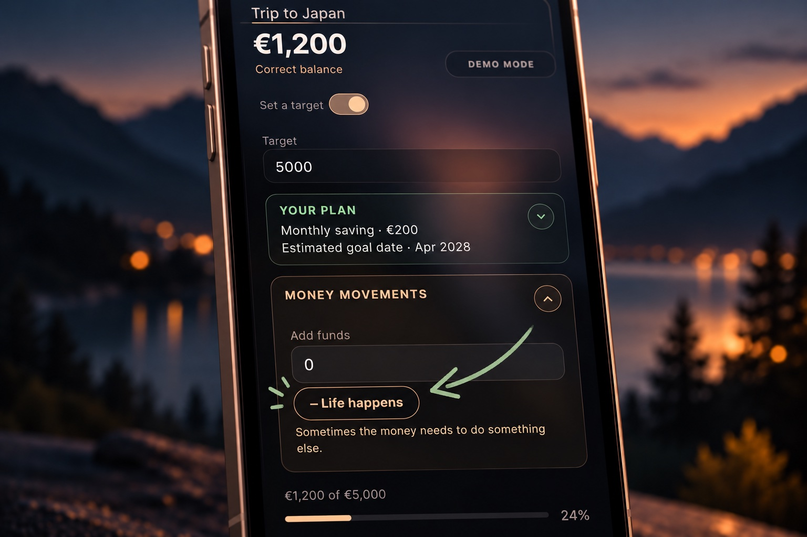

Freedom
Designing a finance app for people who don’t want to live in a finance app.
Most finance apps start with your money. Freedom starts with what you want your money to give back.

01 — The Problem
The problem wasn’t how to display financial information.
It was how to make someone want to come back and look at it.
Money is practical, but it’s also deeply personal. Looking at debt, savings or what you haven’t achieved yet can feel uncomfortable. People can feel behind, overwhelmed or embarrassed — and conventional finance interfaces can make that worse by putting balances, performance and everything you’re doing “wrong” front and centre.
I don’t really want to look at my finances.
I feel behind.
It’s private.
I don’t want to be judged by my numbers.
02 — The Idea
Put the future first.
Let the numbers support it.
Freedom reframes financial progress around what someone is moving away from and what they’re moving towards. The numbers matter, but they aren’t the personality of the product.

03 — Two Sides of the Same Journey
Clearing what holds you back.
Building what moves you forward.
Clearing
What you’re moving away from.
Building
What you’re moving towards.
Becoming financially freer isn’t only about eliminating debt. There needs to be something on the other side of it. Freedom keeps both in the same experience.

04 — Companions
Not advisers.
Not chatbots.
Companions.
Patricia, Veronica and Kevin don’t tell people what to do with their money. They give the experience personality, encouragement and a choice of tone.
Different personalities. The same product underneath.

05 — Then Another Problem Appeared
“Can I see it?”
Money is private.
Someone might love Freedom and want to show it to a partner, friend or colleague. But opening a finance app can mean exposing debt, savings, pension, goals and repayments.
Showing the product shouldn’t mean showing your finances.
06 — Demo Mode
A financial life that isn’t yours.
Demo Mode creates a complete fictional financial life inside the real product.
It isn’t a static product tour. You can explore Freedom properly — or hand your phone to someone else — without exposing your own figures.

Your real information stays untouched underneath.
A demo that behaves like a life.
Goals, balances and progress are already populated, so the person exploring Freedom experiences the actual product rather than a marketing simulation.
The “Trip to Japan” example makes the fictional future feel tangible — something being saved for, not simply another number on a dashboard.
07 — Personality in the Product
Useful doesn’t have to feel clinical.
Freedom still surfaces the things that matter. It just doesn’t have to sound like a bank, a spreadsheet or a performance review.

Patricia can nudge without turning the moment into a warning.
“That credit card has €200 left.
just saying…”
The information is real. The tone changes how it feels.
Because life happens.
Plans don’t always survive real life. Sometimes money saved for one thing needs to do something else.
Instead of labelling that as a withdrawal, setback or missed goal, Freedom simply calls it what it is: Life happens.
It lets someone move money back out without turning the moment into a failure. No broken streak. No warning. No judgement. The plan simply adjusts.
Sometimes the money needs to do something else.

08 — Process
From idea to working product.
Freedom was developed as a complete product system rather than a collection of isolated screens.
01
Define
Product principles, emotional territory, language and the overall user journey.
02
Design & Test
Onboarding, Demo Mode, companions, interactions and repeated testing on a real device.
03
Build & Refine
AI-assisted development in Cursor, with the implementation continuously tested, challenged and art-directed rather than treating generated output as final.
09 — Role
What I did.
- Concept
- Product strategy
- Creative direction
- UX/UI
- Interaction design
- Copy & tone
- Prototyping
- Testing
- AI-assisted development
The numbers matter.
The person matters more.